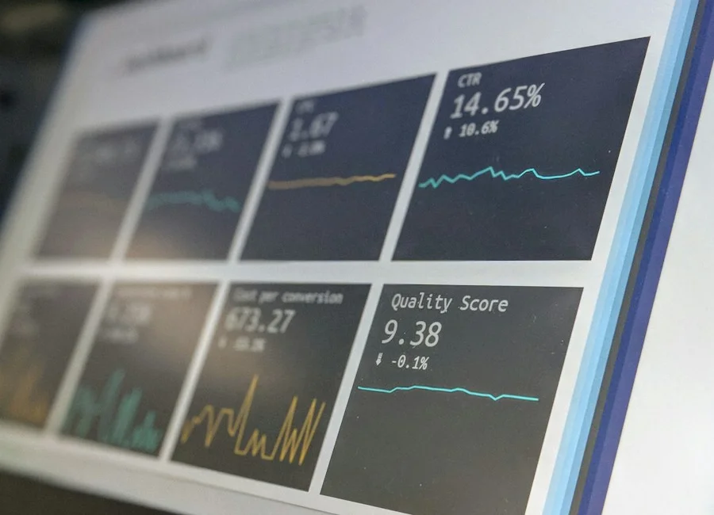

Navigating Corporate Value with Analytical Rigour.
Northbridge provides independent business valuation, strategic transaction advisory, and forensic financial modelling. Every mandate is delivered with the precision and depth required to support board decisions, corporate negotiations, and capital transitions.
Six Focused Capabilities. One Uncompromising Standard.
From early-stage enterprise appraisals to intensive transaction execution, our multidisciplinary team provides actionable financial clarity for business leaders, investors, and legal counsel.
Business Valuation
Defensible enterprise appraisals incorporating DCF analysis, capital structure diagnostics, and market multiples for transactions, tax planning, and reporting.
Mergers & Acquisitions Advisory
Strategic buy-side and sell-side advisory navigating valuation positioning, synergy quantification, bidder dynamics, and transaction terms.
Financial Due Diligence
Rigorous quality of earnings (QofE) audits, normalised working capital peg calculations, balance sheet integrity tests, and liability discovery.
Financial Analysis
Deep historical margin diagnostics, unit economics evaluation, operational efficiency ratios, and peer comparative benchmarking.
Financial Modelling
Dynamic, fully integrated three-statement financial models with multi-case scenario switching, debt sculpting, and sensitivity stress testing.
Transaction Support
End-to-end execution assistance, virtual dataroom governance, technical review of accounting warranties, and post-closing completion accounts true-ups.
Defensible Appraisals Grounded in Evidence.
Determining the true economic value of an operating business requires harmonizing historical operational facts with forward-looking risk assessment and market dynamics.
DCF, Comparable Multiples & Asset-Based Approaches
Analytical Valuation Pillars
Granular multi-year dissection of recurring earnings, revenue consistency, owner adjustments, and capital expenditure reinvestment rates.
Examination of tangible equipment, intangible IP, working capital requirements, vendor dependencies, and key employee concentration.
Empirically supported discount rate derivation incorporating size premiums, specific company risk factors, and realistic capital structures.
Benchmarking against verified public trading comparables and precedent transaction multiples adjusted for growth, size, and geography.
When This Service Is Required:
Balanced Perspectives on Corporate Acquisitions and Divestitures.
Successful transactions demand an objective advisor who understands the opposing incentives of both sides of the negotiating table. We align valuation analysis with real-world execution.
Buy-Side Strategic Advisory
ACQUISITION MANDATEWe assist corporate acquirers, private equity sponsors, and family offices in identifying valuation risks, testing growth synergies, and formulating disciplined offer structures.
- Target financial vetting & valuation range modelling
- Synergy quantification & post-merger integration costs
- Non-binding offer (LOI / Term Sheet) structure design
- Debt capacity evaluation & transaction financing analysis
- Definitive agreement financial mechanics negotiation
Sell-Side Divestiture Advisory
DIVESTITURE MANDATEWe guide business owners and boards through readiness assessments, defensible valuation positioning, and structured dataroom preparation to preserve transaction momentum.
- Pre-sale readiness review & EBITDA normalization
- Confidential Information Memorandum (CIM) financial narrative
- Buyer qualification criteria & competitive bidding dynamics
- Virtual dataroom management & bidder inquiry protocol
- Purchase price adjustments & working capital peg defense
Granular Quality of Earnings & Financial Integrity Reviews.
Transactions succeed or falter based on the veracity of underlying financial statements. Our diligence identifies unrecorded liabilities, tests earnings sustainability, and exposes hidden balance sheet exposures.
Quality of Earnings (QofE) Analysis
Systematic identification and removal of non-recurring revenue, owner discretionary expenses, pro-forma synergies, and non-operating windfalls to establish sustainable run-rate EBITDA.
Revenue Quality & Customer Concentration
Verification of contract durations, customer churn patterns, recurring subscription vs. one-time project revenues, pricing elasticity, and top-ten customer margin contribution.
Working Capital Peg & Cash Flow Dynamics
Twelve-month historical working capital trends, seasonality cycles, inventory obsolescence provisions, and establishing a fair, defensible working capital target for closing.
Debt & Debt-Like Items Scrutiny
Forensic search for off-balance-sheet commitments, underfunded pension liabilities, overdue tax liabilities, earnout overhangs, litigation exposures, and deferred capital expenditures.
Forecast & Budget Feasibility Testing
Critique of management projections against historical budget achievement track records, industry growth benchmarks, and available operational capacity.
Audit-Grade Quality of Earnings & Working Capital Review
Evidence-Based Diagnostics & Dynamic Scenario Models.
Transforming complex operational and accounting data into transparent, stress-tested analytical tools that illuminate financial realities and empower confident leadership decisions.

In-Depth Financial Analysis
Comprehensive diagnostic review of historical operating performance, capital efficiency, margin behavior, and peer benchmarks to uncover true drivers of economic return.
- Gross and operating margin volatility tracking
- Return on Invested Capital (ROIC) decomposition
- Operating cash flow conversion cycle dynamics
- Fixed vs. variable cost structure leverage
Dynamic Financial Modelling
Institutional-grade three-statement forecasting models with scenario toggles, dynamic debt sculpting, and sensitivity analysis engineered for executive confidence.
- Three-statement integration (P&L, Balance Sheet, Cash Flow)
- Multi-scenario toggles (Base, Upside, Downside, Stress)
- Debt amortization waterfalls & covenant monitoring
- Valuation output link (DCF, IRR & LBO returns)
Technical Governance for High-Stakes Deal Execution.
From preliminary letters of intent through closing completion mechanisms, Northbridge serves as an objective technical partner safeguarding deal integrity across every milestone.
Deal Architecture & Term Sheet Structuring
Providing quantitative advisory on consideration structures, earnout mechanics, vendor take-back loans, net debt definitions, and closing conditionality.
Virtual Data Room Governance & Q&A Protocol
Structuring, indexing, and actively managing secure dataroom repositories, tracking counterparty inquiries, and ensuring rapid, auditable document disclosure.
Definitive Agreement Financial Clauses
Technical advisory on financial representations, warranty schedules, indemnity caps, leakage definitions in locked-box deals, and escrow retention parameters.
Completion Accounts & Post-Closing Settlement
Preparing or reviewing final closing completion accounts, calculating final working capital true-ups, net cash adjustments, and resolving technical accounting discrepancies.
Technical Advisory Across Signing, Diligence & Closing
Bring Clarity and Confidence to Your Next Strategic Decision.
Whether your organisation is preparing for a transaction, commissioning an independent valuation, or requiring audit-grade financial due diligence, Northbridge offers the senior analytical rigour your board demands.